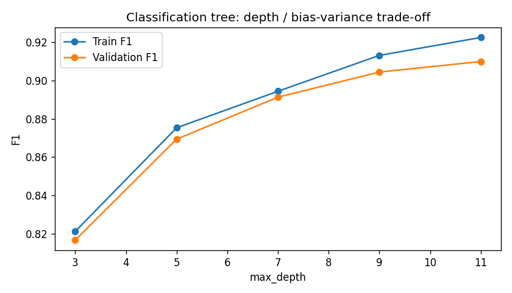
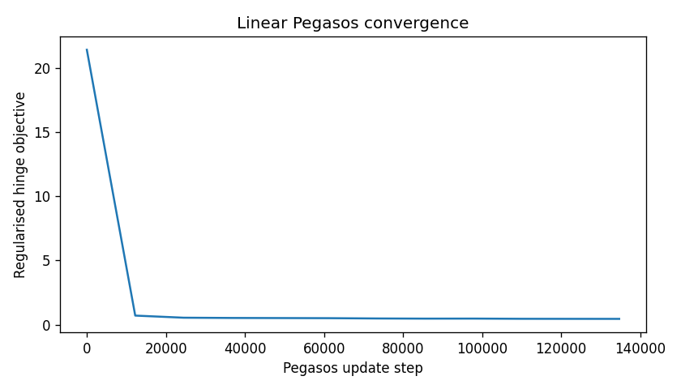
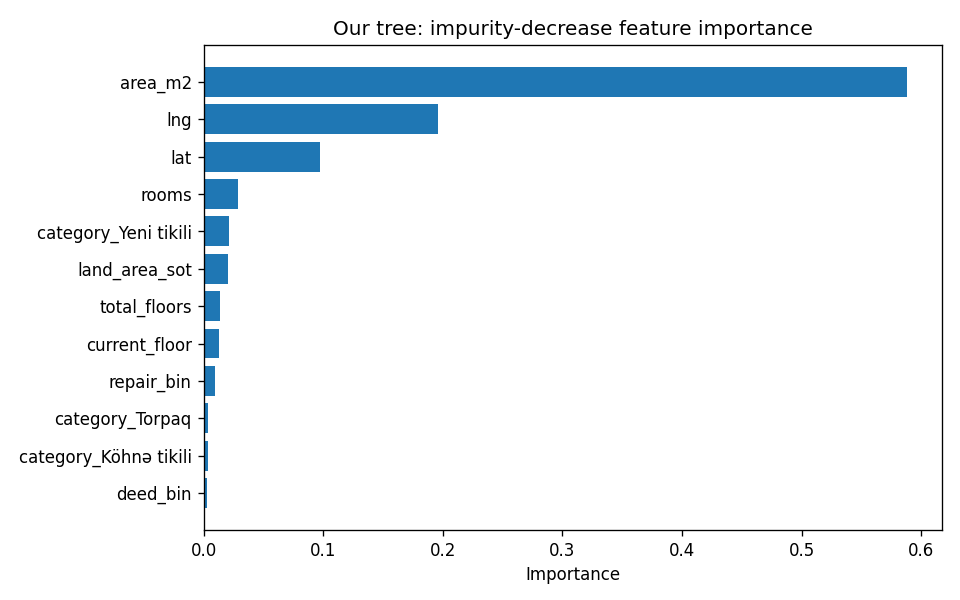

The AI Academy project asks us to implement a decision tree and a support-vector machine from first principles, then compare them fairly with scikit-learn [1]. The Bina.az sale dataset [2] is suitable because prices depend on interacting property and location features, and the scraped rows require careful cleaning.
Task A predicts sale price in AZN with a regression tree. Task B classifies each listing as Standard or Premium with a tree classifier and SVM. The two tasks share the same cleaned records and feature matrix. Our focus is algorithm correctness, leakage control, and interpretable experiments rather than deployment as a pricing service.
The raw UTF-8 CSV has 100,775 rows and 51 columns. We keep only AZN listings, retain the latest scraped snapshot per listing URL, parse Azerbaijani numeric fields, and apply fixed plausibility bounds to price, area, floors, land size, and Azerbaijan coordinates. This leaves 64,128 listings. The rules remove obvious scrape or entry errors without estimating cutoffs from the held-out test set.
| Property | Value |
|---|---|
| Raw rows | 100,775 |
| Cleaned listings | 64,128 |
| Numeric model features | 29 |
| Train / validation / test | 44,890 / 9,619 / 9,619 |
| Premium threshold | 210,000 AZN |
| Premium share: train / val / test | 49.6% / 49.4% / 49.4% |
Area, rooms, floor numbers, land area, latitude, and longitude become numeric features. Missing structural values become zero with explicit missing indicators. Category and selected city levels are encoded with fixed one-hot columns; repair, deed, and mortgage flags become binary. Identifiers, raw addresses, URLs, and free text are excluded. Crucially, unit_price and total_price are removed because they encode the target price.
Exploration shows a strongly right-skewed price distribution. Larger area generally accompanies higher price, but listings of similar size still vary widely. The training-median tier definition yields near-balanced classes.
We first select 70% of rows for training. The training-price median, 210,000 AZN, defines Premium as price above that threshold. We then stratify the remaining rows into 15% validation and 15% test sets using this fixed label. Premium shares are 0.496, 0.494, and 0.494 respectively. Standardization for SVM uses training means and standard deviations only.
Our NumPy tree sorts each numeric feature at a node and tests thresholds between adjacent distinct values. It chooses the split with the largest weighted impurity decrease:
Classification uses Gini impurity or entropy; regression uses variance (MSE). Splitting stops according to max_depth, min_samples_split, min_samples_leaf, and min_impurity_decrease. Leaves predict the majority class or mean target; class probabilities use leaf frequencies. A deterministic toy example matches the scikit-learn root feature, threshold, and predictions.
For labels y ∈ {−1,+1}, the linear classifier minimizes regularized hinge loss with stochastic Pegasos updates [3]. The assignment's augmented-feature version appends a constant 1 to each input, so the bias participates in shrinkage and projection. At update t, ηt = 1/(λt). If yif(xi) < 1, the update adds ηtyixi; otherwise it applies only shrinkage.
We report ‖w‖, margin width 2/‖w‖, and training points with yif(xi) ≤ 1. The bias penalty matches the augmented-feature update, so the logged objective and convergence plot use the same function as training. For nonlinear features, RFF approximates an RBF mapping with cosine features before the same linear solver.
We model log(1 + price) for regression and invert predictions before computing price-scale RMSE, MAE, and R². Classification uses precision, recall, F1, ROC-AUC, and confusion matrices. The common seed is 42. Hyperparameters are selected on validation data only; the test split is reserved for final reporting.
The regression tree sweeps depth 4–12 and leaf size 5–100. The classifier compares Gini and entropy, then depth and leaf size. Pegasos tests four λ values, 1–5 epochs, and three learning schedules. RFF tests γ = 0.03, 0.1, and 0.3. Selected settings are regression depth 12 / leaf 5, classification Gini / depth 11 / leaf 5, linear Pegasos λ = 0.001 / 3 epochs, and RFF γ = 0.1 / 120 components.
Reference models use matched decision-tree settings where possible and a StandardScaler + SGDClassifier(loss='hinge') pipeline for linear classification. Scikit-learn is used only for comparison, not as either main implementation.
| Model | RMSE | MAE | R² |
|---|---|---|---|
| Our tree | 310,716 | 87,181 | 0.5921 |
| sklearn tree | 299,329 | 86,475 | 0.6215 |
| Model | Prec. | Recall | F1 | AUC |
|---|---|---|---|---|
| Our tree | 0.9059 | 0.9139 | 0.9099 | 0.9630 |
| sklearn tree | 0.9068 | 0.9139 | 0.9103 | 0.9629 |
| Linear Pegasos | 0.8439 | 0.8027 | 0.8228 | 0.9083 |
| RFF Pegasos | 0.8141 | 0.8061 | 0.8101 | 0.8936 |
| sklearn SGD | 0.8457 | 0.8069 | 0.8259 | 0.9077 |
The custom classifier closely matches the sklearn tree (F1 gap 0.0005). The regression tree has useful signal but substantially larger errors, especially for high-priced listings. RFF did not beat the linear SVM under the tested feature dimension and bandwidths.
Three-fold cross-validation on a fixed-seed 18,000-row subset of the development data estimates variation without touching the final test set. It uses the selected settings and is a practical uncertainty check rather than a full nested search.
| Model | Metric | Mean ± SD |
|---|---|---|
| Our tree classifier | F1 | 0.8949 ± 0.0054 |
| sklearn tree classifier | F1 | 0.8970 ± 0.0062 |
| Linear Pegasos | F1 | 0.8216 ± 0.0096 |
| RFF Pegasos | F1 | 0.8099 ± 0.0031 |
| sklearn SGD | F1 | 0.8324 ± 0.0013 |
| Our tree regressor | RMSE | 364,775 ± 21,116 |
| sklearn tree regressor | RMSE | 364,667 ± 21,064 |
In the validation sweep, linear Pegasos F1 rose from 0.8224 at one epoch to 0.8330 at three, while margin width changed from 0.241 to 0.335. At three epochs, Pegasos, inverse-square-root, and constant schedules produced F1 values 0.8330, 0.8000, and 0.8204, with widths 0.335, 0.789, and 0.437. The learning schedule affects both prediction and margin.
For the final linear model, ‖w‖ = 5.979 and the geometric margin width is 0.335. The margin test identifies 19,892 of 44,890 training listings as support vectors or margin violations.
| Model | Fit (s) | Predict (ms/1k) |
|---|---|---|
| Our tree classifier | 1.32 | 5.03 |
| sklearn tree classifier | 0.18 | 0.36 |
| Linear Pegasos | 1.06 | 0.070 |
| RFF Pegasos | 1.27 | 2.54 |
| sklearn SGD pipeline | 0.36 | 0.40 |
Timing depends on machine load. In the separate 2k-to-10k-row scaling test, tree fit time rose from 0.12 to 0.43 s and linear Pegasos from 0.05 to 0.24 s.
| Model | TN | FP | FN | TP |
|---|---|---|---|---|
| Our tree | 4,419 | 451 | 409 | 4,340 |
| Linear Pegasos | 4,165 | 705 | 937 | 3,812 |
The tree makes fewer false negatives and false positives than the linear model on this test split.



Area accounts for 58.8% of the tree's impurity-decrease importance, followed by longitude (19.6%) and latitude (9.8%). These scores describe this fitted model; they do not establish causal effects. The SVM's largest absolute standardized weight is also area. Several rare-city indicators have relatively large weights, so those coefficients should not be interpreted as stable location effects.
The custom tree is accurate for new and old apartments (about 92%) but lower for land (81.8%) and commercial objects (84.6%). Price regression is the main limitation: for the top 5% of test prices, MAE is about 773,000 AZN, versus about 49,500 AZN for the remaining 95%. The long-tailed target drives the large RMSE even with log-target training.
RFF with 120 components lowers test F1 by 0.0127 compared with linear Pegasos. More components or a broader joint search over γ and λ might help, but would increase training cost. We omit descriptions and raw addresses to keep the educational implementation manageable; richer features are future work. Fixed cleaning bounds can still leave implausible listings.
Samir Hasanov implemented the from-scratch decision tree, ran its experiments, and integrated the full pipeline. Mammadaliyev Ramil implemented Pegasos SVM and RFF and ran the SVM experiments. Elmin Seyidov prepared the data, EDA, leakage checks, splitting, and evaluation metrics. The team jointly reviewed results and prepared the report and presentation.
The from-scratch tree closely matches scikit-learn for price-tier classification, and the custom linear SVM is close to the SGD hinge baseline. Fair splitting, train-only preprocessing, and validation-only tuning make these comparisons credible. Regression remains moderate and should not be presented as a reliable valuation system.
The data come from the Bina.az Sale Project [2]. NumPy and pandas support data operations, matplotlib generates figures, and scikit-learn supplies reference models. AI assistance helped draft code and prose, explain methods, and debug. The team reviewed and tested the submitted work and remains responsible for defending it.
[1] F. Pedregosa et al., “Scikit-learn: Machine Learning in Python,” JMLR, vol. 12, pp. 2825–2830, 2011.
[2] S. Memmedli, “Bina.az Sale Project,” Kaggle dataset, kaggle.com/datasets/sehriyarmemmedli/binaaz-sale-project.
[3] S. Shalev-Shwartz, Y. Singer, N. Srebro, and A. Cotter, “Pegasos: primal estimated sub-gradient solver for SVM,” Mathematical Programming, vol. 127, pp. 3–30, 2011.